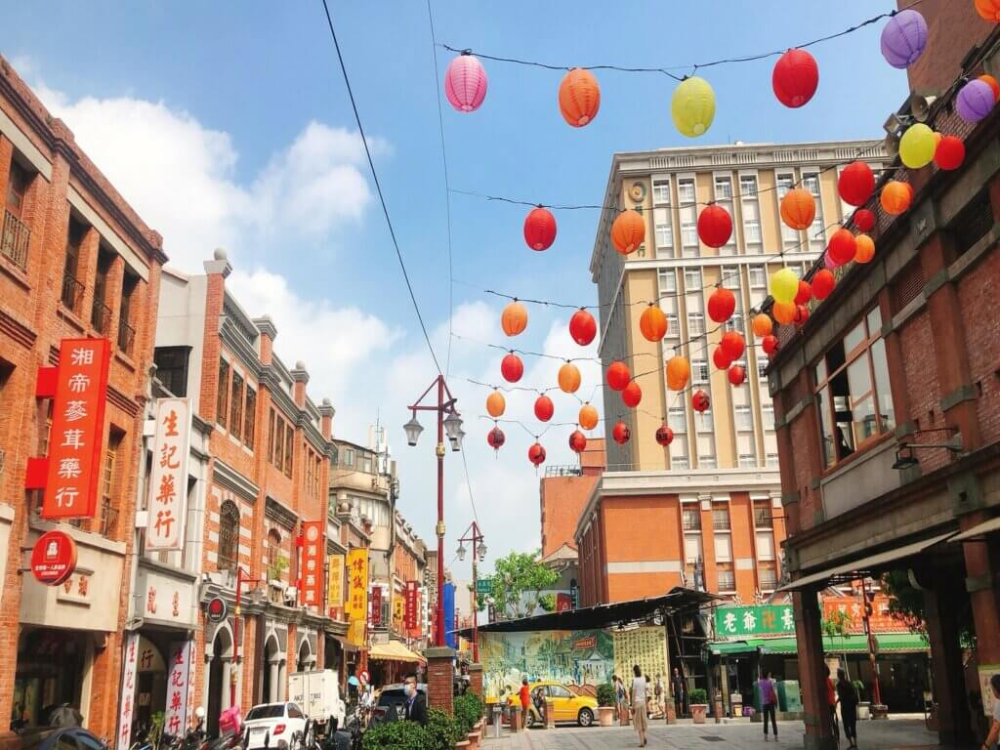
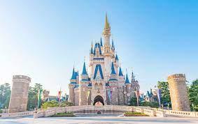
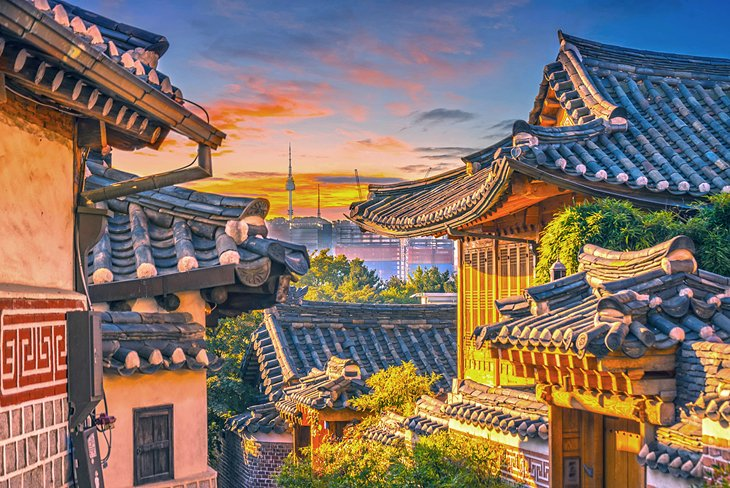
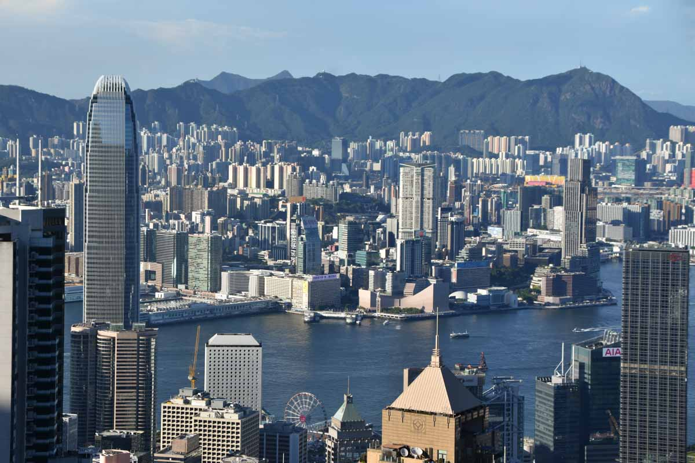
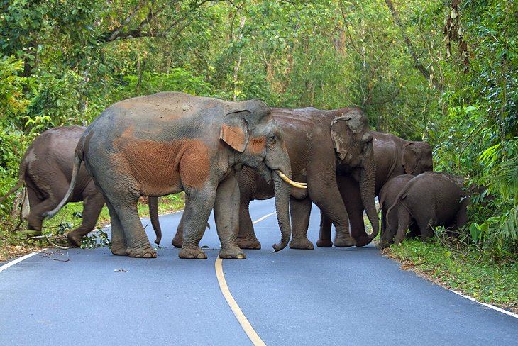
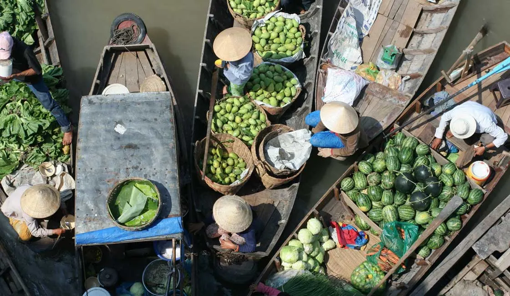

Taiwan, officially the Republic of China, is a country in East Asia. It is located at the junction of the East and South China Seas in the northwestern Pacific Ocean, with the People's Republic of China to the northwest, Japan to the northeast, and the Philippines to the south.
Taiwan contains four terrestrial ecoregions: Jian Nan subtropical evergreen forests, South China Sea Islands, South Taiwan monsoon rain forests, and Taiwan subtropical evergreen forests. The eastern mountains are heavily forested and home to a diverse range of wildlife, while land use in the western and northern lowlands is intensive. Taiwan Wiki.
Photo Gallery
Taiwanese night markets are street markets in Taiwan that operate in urban or suburban areas between sunset and sunrise.The drive to Lamar Valley requires some dangerous roads. But the result is amazing sunset views.Taroko National Park is one of the nine national parks in Taiwan and was named after the Taroko Gorge, the landmark gorge of the park carved by the Liwu River.

Dadaocheng Wharf thrived in earlier years as an entrepot for trade along the river. Now, it is a good place to watch the sunset and explore buildings with old school style.Fireworks light up the Taiwan skyline during New Year."
Japan
Geographical Location: East Asia
Japan is an island country in East Asia. It is situated in the northwest Pacific Ocean and is bordered on the west by the Sea of Japan, extending from the Sea of Okhotsk in the north toward the East China Sea, Philippine Sea, and Taiwan in the south.
Contemporary Japanese culture combines influences from Asia, Europe, and North America. Traditional Japanese arts include crafts such as ceramics, textiles, lacquerware, swords and dolls; performances of bunraku, kabuki, noh, dance, and rakugo; and other practices, the tea ceremony, ikebana, martial arts, calligraphy, origami, onsen, Geisha and games. Japan Wiki.
Photo Gallery
Otaru, a port city, is known for glassworks, music boxes and sake distilleries.

People said, the Disneyland in Tokyo has the most fun among all Disneyland in the world.Osaka is a large port city and commercial center on the Japanese island of Honshu. It's known for its modern architecture, nightlife and hearty street food.Japan's Mt. Fuji is an active volcano about 100 kilometers southwest of Tokyo. Commonly called 'Fuji-san,' it's the country's tallest peak, at 3,776 meters.Kyoto, once the capital of Japan, is a city on the island of Honshu. It's famous for its numerous classical Buddhist temples, as well as gardens, imperial palaces, Shinto shrines and traditional wooden houses.
South Korea
Geographical Location: East Asia
Korea is a peninsular region in East Asia. In North Korea, both the peninsula and country are called Choson. In South Korea, the corresponding term is Hanguk.
In the 21st century, South Korea has been renowned for its globally influential pop culture, particularly in music (K-pop), TV dramas (K-dramas) and cinema, a phenomenon referred to as the Korean Wave.Korea Wiki.
Photo Gallery
Of the five grand palaces built by the Joseon Dynasty in the 15th century around Seoul, Changdeokgung Palace was always the preferred royal residence. It's where the king and royal family lived their daily lives.Busan is the second largest city in the country, and its coast is lined with some beautiful beaches and resorts. There's a lot of culture and history here, too.Jeonju is a very historic city, once the spiritual capital of the Joseon Dynasty, it's about 90 minutes by train from Seoul.Everyone visiting Seoul should go up in the city's iconic observation tower. Its position almost on top of a mountain, plus the height of the tower itself, gets you almost 500 meters above sea level and the city below.

Hanok villages, which can be found in a few places in Seoul and around Korea, are living museums. They're restored and preserved ancient neighborhoods, some in their original location (like Bukchon) and some re-created with hanoks (traditional Korean homes) moved from elsewhere. They give visitors an opportunity to not only experience what it was like to live in a hanok, but also what it was like to live in Korea 600 years ago.
Hong Kong
Geographical Location: East Asia
Hong Kong, officially the Hong Kong Special Administrative Region of the People's Republic of China, is a city and a special administrative region in China.
Hong Kong is characterised as a hybrid of East and West. Traditional Chinese values emphasising family and education blend with Western ideals, including economic liberty and the rule of law.Hong Kong.
Photo Gallery

Victoria Peak is the highest point on Hong Kong Island and is the place to go for spectacular views of the city and surrounding nature. There are many walking paths, popular with joggers, that criss-cross the peak and culminate at one of the many panoramic viewpoints.If you want to experience the wilder side of Hong Kong, then head to Lantau, the city’s largest Island. It’s easily reachable from the city center by MTR and ferry (Pier 5, 30 minutes) and makes for a perfect day trip from Hong Kong, a break from the hustle and bustle of the downtown area!At night time the Tsim Sha Tsui waterfront is the place to be to watch the Symphony of Lights, a permanent light show that brightens up the whole Victoria Harbour.THERE’S A REASON HONG KONG earned a reputation as a concrete jungle. Both people and skyscrapers pack its busy streets. One behemoth building in particular offers an astounding visual of its immense population. Its individual units are stacked one on top of the other and create a colorful, cohesive tapestry of homes.Cheung Chau is a tiny island close to Lantau that is the home of a picturesque fishing village and a couple of pleasant sandy beaches. It is definitely one of the most popular Hong Kong places to visit, so try and avoid coming on weekends or during holidays.
Thailand
Geographical Location: Southeast Asian
Thailand is a Southeast Asian country. It's known for tropical beaches, opulent royal palaces, ancient ruins and ornate temples displaying figures of Buddha.
In Bangkok, the capital, an ultramodern cityscape rises next to quiet canalside communities and the iconic temples of Wat Arun, Wat Pho and the Emerald Buddha Temple (Wat Phra Kaew). Thailand.
Photo Gallery
Krabi province is home to some of Thailand's most famous beach destinations and Railay tops the list as one of the most stunning. Definitely one of the best beaches in Krabi, Railay delivers on promises of white sand, turquoise-blue water, and the feeling that you've found a slice of paradise even before your feet touch the sand.The main island is Phi Phi Don. This is the largest of the islands and the only one permanently inhabited, and this is what people usually mean when they refer to Koh Phi Phi. Koh Phi Phi Leh is the other of the Phi Phi Islands.Even if your plans for Thailand mainly involve frolicking on a beach and eating as much Massaman curry and pad Thai as humanly possible, you'll probably spend at least a day or two in Bangkok. In fact, I encourage it as it is one of the most fascinating and exciting capital cities in the world.

Elephants are revered in Thailand, and statues and paintings of them can be seen everywhere you go, including the royal palaces and many temples. For the ultimate experience, however, nothing beats the chance to see elephants in their natural environment, and Khao Yai National Park provides a great opportunity to do just that.Thailand's floating markets offer a unique way to do some shopping and eating while supporting local vendors and getting a closer look into a traditional way of life.
Vietnam
Geographical Location: Southeast Asian
Vietnam is a Southeast Asian country known for its beaches, rivers, Buddhist pagodas and bustling cities.
Hanoi, the capital, pays homage to the nation’s iconic Communist-era leader, Ho Chi Minh, via a huge marble mausoleum. Ho Chi Minh City (formerly Saigon) has French colonial landmarks, plus Vietnamese War history museums and the Củ Chi tunnels, used by Viet Cong soldiers.Vietnam.
Photo Gallery
Hoi An’s utterly charming Ancient Town is one of Vietnam’s top attractions, but despite the crowds, still hasn’t lost its beguiling charm. Centrally located in Hoi An town, alongside picturesque Thu Bon River, this compact enclave was once a thriving Silk Road trading port, from the 16th to 19th centuries.While in Hoi An, be sure to visit My Son Cham towers, located southwest. Not only is this one of Vietnam’s most striking examples of its ancient Champa Kingdom and a World Heritage Site, but also one of Southeast Asia’s most important archaeological sites and a foremost Hindu temple complex.

Located north of Greater Ho Chi Minh City, the Cu Chi Tunnels provide a more interactive historical experience for all ages (although claustrophobics should perhaps miss this one).Located in the Central Provinces, Hue was Vietnam’s imperial capital from 1802 to 1945, the home of a dynasty of Nguyen Emperors and the nation’s political, cultural and religious heart. This vast bay area is not just one of Asia’s most spectacular natural wonders, protected as a World Heritage Site, but one big tourist attraction in itself and one of Vietnam’s most iconic sights.